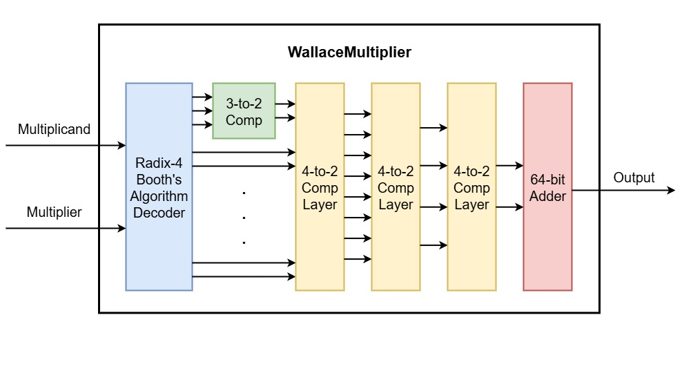
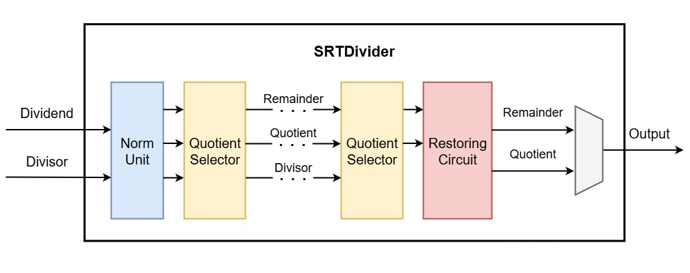

Execute Stage
MUL/DIV
1. Features
The MUL and DIV modules supports RV32M arithmetic.
Supported Operations
mul( Multiplication, lower 32 bits )mulh( Multiplication, higher 32 bits (signed x signed) )mulhsu( Multiplication, higher 32 bits (signed x unsigned) )mulhu( Multiplication, higher 32 bits (unsigned x unsigned) )div( Division (signed) )divu( Division (unsigned) )rem( Remainder (signed) )remu( Remainder (unsigned) )
2. Port specification
Input ports
Signal |
Width |
Description |
|---|---|---|
clk |
1 |
clock signal |
rst_n |
1 |
reset signal |
MUL_DIV_start |
1 |
start signal for the MUL/DIV |
MUL_DIV_ctrl |
3 |
func3 of the instruction |
data1 |
32 |
rs1’s content |
data2 |
32 |
rs2’s content |
Output ports
Signal |
Width |
Description |
|---|---|---|
MUL_DIV_out |
32 |
MUL/DIV’s result |
MUL_DIV_done |
1 |
finish signal of the MUL/DIV |
3. Architecture
The MUL_DIV_top module acts as the central control unit that decodes incoming signals and dispatches them to the appropriate multiplier or divider unit for the correct operation.
Module breakdown
MUL_DIV_top.v: Top-level module that controls multiplier and divider unit.WallaceMultiplier.v: Performs multiplication.Booth4Decode.v: Module for partial product generation using Booth’s algorithm.Compressor32.v: 64-bit 3-to-2 compressor for partial product reduction.Compressor42.v: 64-bit 4-to-2 compressor for partial product reduction.MUL_Reg.v: Internal register for multiplier
SRTDivider.v: Performs division and remainder.DivideLeftShift.v: Module for normalizing operands.QuotientSelect: Module for selecting the quotient during division.DIV_Reg.v: Internal register for divider.
4. Design Detail
Multiplier
The 32-bit Multiplier is a dedicated functional unit designed to perform high-speed multiplication for the RISC-V instruction set architecture. Its primary purpose is to provide the required MUL, MULH, MULHSU, and MULHU operations.

Design Rationale
This multiplier employs a combination of the Radix-4 Booth algorithm and a Wallace Tree structure to achieve high performance and efficient hardware utilization.
Radix-4 Booth Decoding: The Booth algorithm is a multiplication technique that reduces the number of partial products that need to be summed. For a 32-bit multiplier, using Radix-4 effectively halves the number of partial products compared to a simple bit-by-bit multiplication. This simplification is crucial as it directly translates to less hardware in the subsequent summation stages.
Wallace Tree: A Wallace Tree is a highly optimized carry-save adder (CSA) tree that efficiently reduces a large number of partial product rows to just two rows in a logarithmic number of steps. Its advantage lies in its ability to avoid full carry propagation in its intermediate stages, thus keeping the combinational delay low per level of the tree.
By combining these two techniques, the multiplier minimizes the number of terms to sum, then efficiently sums them in a parallel, non-carry-propagating manner.
Functional Breakdown
Radix-4 Booth Encoding & Partial Product Generation: This initial stage prepares the multiplicand (rs1) and multiplier (rs2) based on the specific RISC-V instruction. The 32-bit multiplier is fed into the Radix-4 Booth Decoder. This decoder examines overlapping groups of 3 bits of the multiplier (including an implicit trailing zero) to generate 34 bits data for each partial product (1 sign bit + 32 data bits). Based on the 34 bits data, the actual partial product rows are generated. Since Radix-4 processes two bits at a time, 17 partial products are generated. These partial products are already appropriately shifted according to their bit position.
Wallace Tree Reduction: The numerous partial product rows are then fed into the Wallace Tree. This tree is composed of a 3-to-2 compressor and 3 layers of 4-to-2 compressors. In each layer, four input rows are reduced to two output rows without immediate carry propagation across the full width. This process continues until only two rows remain. The Wallace tree is pipelined itself, meaning it may span multiple clock cycles, with pipeline registers inserted between layers of compressors.
Final Summation: The two remaining 64-bit vectors represent the complete 64-bit product in carry-save form. These two vectors are then fed into an adder. This is the only stage where full carry propagation occurs across the entire width of the 64-bit product.
Divider
The Radix-4 SRT Divider is a dedicated functional unit designed to perform high-speed integer division for the RISC-V instruction set. Its primary purpose is to efficiently compute the quotient and remainder for all DIV, DIVU, REM, and REMU operations.

Design Rationale
This divider is built around the SRT division algorithm to achieve high performance. The SRT algorithm is a family of digit-recurrence algorithms that determine multiple bits of the quotient in each clock cycle, thereby accelerating the division process.
Radix-4: The divider generates two quotient bits at a time. It does this by using a base-4 representation internally, where each quotient digit can take on values from a redundant set,
{-2, -1, 0, 1, 2}. Processing two bits at a time drastically reduces the number of iterations needed to complete a 32-bit division.Redundancy: The use of a redundant quotient digit set is the key to the SRT algorithm’s speed. It allows the divider to select the next quotient digit based on only a few of the most significant bits of the partial remainder, without waiting for the slow process of full carry propagation. This simplifies the decision-making logic and allows the core iterative loop to run at a higher clock speed.
Functional Breakdown
Pre-processing and Normalization: Before the iterative process begins, the dividend and divisor are prepared and represented as 64-bit numbers. A key step is normalization, where the divisor is left-shifted until its most significant
1bit is at a predetermined position. The dividend is shifted by the same amount, and the number of shifts is recorded. This ensures the operands are properly aligned for the SRT iterations and handles cases with leading zeros efficiently.Core Iterative Loop: Main part of the SRT divider, implemented as a multi-cycle iterative loop. For each iteration 2 bits of quotient in redundant form are generated, and the remainder is updated. Crucially, the additions and subtractions are performed using a Carry-Save Adder (CSA), avoiding the long carry-propagation delay of a standard adder. The partial remainder is stored in a carry-save format to facilitate this fast addition.
Quotient Digit Selection: Within the recurrence loop, quotient bits are determined by the Quotient Digit Selection logic. The QDS logic examines 6 of the most significant bits of the partial remainder and the divisor to select the next 2 digits. This eliminates the need to compute the full partial remainder in each cycle, dramatically speeding up the process.
Finalization: After the required number of iterations, the divider has a quotient in a redundant Radix-4 form and a final partial remainder still in carry-save form. The final 2 clock cycles performs the necessary steps:
Restore remainder and quotient if needed.
The redundant quotient digits are converted into a standard two’s complement binary number.
The final remainder (in its carry-save form) is converted into a standard binary representation.
FPU
1. Features
The FPU module supports IEEE 754 standard RV32F floating-point arithmetic.
Supported Data Types
Single Precision (32-bit floating point)
32-bit Signed and Unsigned Integers for conversion operations.
Supported Operations
Arithmetic:
fadd.s( Addition )fsub.s( Subtraction )fmul.s( Multiplication )fdiv.s( Division )fsqrt.s( Square Root )
Comparison:
feq.s( Compare equal )flt.s( Compare less than )fle.s( Compare less than or equal )fmin.s( Compare and output smaller floating-point number )fmax.s( Compare and output larger floating-point number )
Conversions:
fcvt.w.s( Convert a floating-point number to a signed 32-bit integer )fcvt.wu.s( Convert a floating-point number to a unsigned 32-bit integer )fcvt.s.w( Convert a signed 32-bit integer to a floating-point number )fcvt.s.wu( Convert a unsigned 32-bit integer to a floating-point number )
Fused:
fmadd.s( Addition after Multiplication )fmsub.s( Subtraction after Multiplication )fnmsub.s( Addition after (negative)Multiplication )fnmadd.s( Subtraction after (negative)Multiplication )
Sign operation:
fsgnj.s( f[rd] = {f[rs2][31], f[rs1][30:0]} )fsgnjn.s( f[rd] = {~f[rs2][31], f[rs1][30:0]} )fsgnjx.s( f[rd] = {f[rs1][31] ^ f[rs2][31], f[rs1][30:0]} )
Others:
fclass.s( Classify floating-point number’s status )
IEEE 754 Compliance
Rounding Modes:
Round to Nearest, ties to Even (RNE) - Default
Round Towards Zero (RTZ)
Round Down (towards -∞) (RDN)
Round Up (towards +∞) (RUP)
Round to Nearest, ties to Max Magnitude (RMM)
Exception Flags:
Invalid Operation(NV)Division by Zero(DZ)Overflow(OF)Underflow(UF)Inexact(NX)
2. Port specification
Input ports
Signal |
Width |
Description |
|---|---|---|
clk |
1 |
clock signal |
rst_n |
1 |
reset signal |
FPU_start |
1 |
start signal for the FPU |
opcode |
7 |
opcode of the instruction |
func7 |
7 |
func7 of the instruction |
func3 |
3 |
func3 of the instruction |
rs2 |
5 |
rs2 of the instruction |
frm |
3 |
rounding mode from fcsr |
operand_a |
32 |
rs1’s content |
operand_b |
32 |
rs2’s content |
operand_c |
32 |
rs3’s content |
Output ports
Signal |
Width |
Description |
|---|---|---|
result_out |
32 |
FPU’s result |
fflags |
5 |
Exception flags of the operation |
FPU_done |
1 |
finish signal of the FPU |
3. Architecture
The FPU is designed with a top-down, modular approach. The FPU_Top module acts as the central hub that decodes incoming signals and dispatches them to the appropriate functional unit.
Module breakdown
FPU_Top.v: Top-level FPU module that controls all submodules.SP_Decoder.v: Decodes FP numbers.SP_Encoder.v: Encodes FP numbers.SP_Adder.v: Performs floating-point addition and subtraction.SP_Multiplier.v: Performs floating-point multiplication.SP_Divider.v: Performs floating-point division.SP_Sqrt.v: Performs floating-point square root.SP_Compare.v: Compares two floating-point numbers.SP_Min_Max.v: Compares two floating-point numbers and output a floating-point number.SP_Convert.v: Handles all conversions between FP and integer.SP_Fused.v: Handles fused operation.SP_Fsgnj.v: Handles sign operation.SP_Classifier.v: Handlesfclass.soperation.
ALU
The ALU supports basic arithmetic and shifter operations for the RISC-V architecture. We use the ALU_top module to translate the decoded results from the CPU into ALU opcodes. Within the ALU module, a barrel shifter is used to handle shift operations instead of relying on the << operator.
Support Operation
ADD : A+B
SUB : A-B
AND : A AND B
OR : A OR B
XOR : A XOR B
SLL : Shift left logical
SRL : Shift right logical
SRA : Shift right arithmetic
SLT : Less than (Signed)
SLTU : Less than (Unsigned)
I/O Ports
Signal |
Width |
Type |
Description |
|---|---|---|---|
Ctrl |
4 |
Input |
Control opcode for ALU |
a |
32 |
Input |
rs1 data value |
b |
32 |
Input |
rs2 data value |
Out |
32 |
Output |
Result value |
Modules
ALU_top.v: Interface of ALU and pipeline CPU.ALU.v: Combine arithmetic operation and shift operation.ALU_barrel_shifter.v: Handle shifter operation.